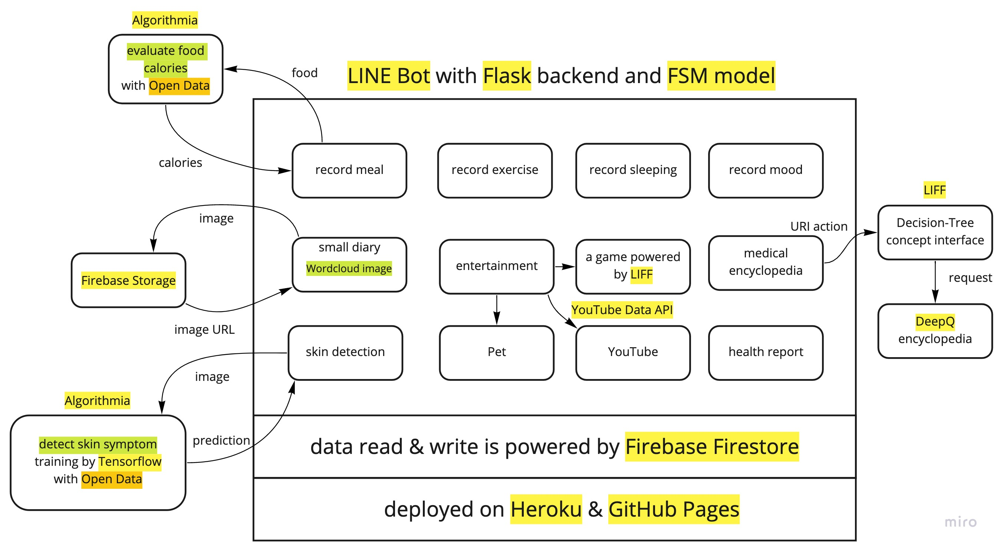
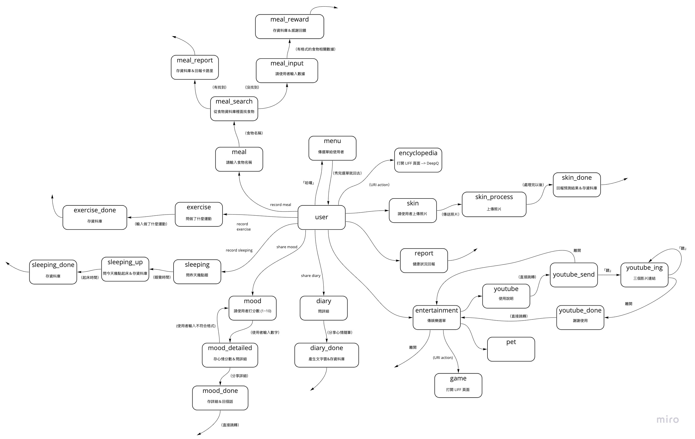
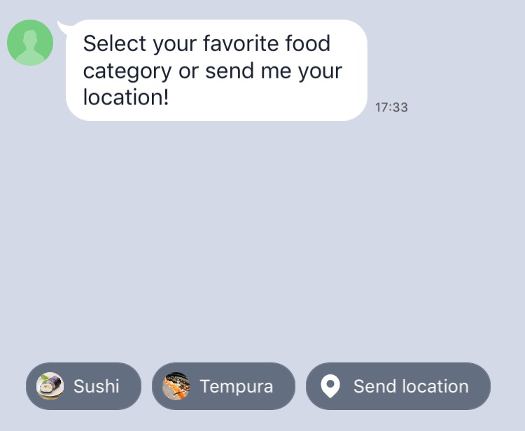

簡單和大家分享適合搭配黑客松 LINE Bot 的相關技術～
2021 升大四的暑假 (7/1~7/3)，和 Justin、Frank、Jennie、Henry 參加了由交大國際事務處主辦的「NYCU Global Design & Innovation Competition」黑客松競賽，有不少收穫！
（這場黑客松很特別，因為疫情的關係，原本是實體的，改採線上競賽）
我那場黑客松
題目
How to use Open Data combined with LINE Bot to improve medical and health care
（以 LINE 的聊天機器人結合 Open Data，在醫療、照護、健康領域進行創意發想）
Presentation Video
https://www.youtube.com/watch?v=djUoMO8IMcU
System Design

- 我們用 Flask 後端及 FSM model 當作 LINE Bot 的基本架構
- 之所以選擇用 FSM model 而不是簡單的 if else 是因為，我們認為和 Bot 對話的情境就像是一個 FSM，所以用 FSM model 去描述再適合不過了！
- 用 Firebase Firestore 做資料庫的讀寫
- 用 Firebase Storage 做圖片的上傳及 URL 生成
- 用 Heroku 部署 LINE Bot server
- 用 Algorithmia 平台部署我們的 ML model 和一個 function
- 為何不和 LINE Bot server 一起部署？因為這麼做不但能減輕 server 的負擔，也不必安裝 ML 相關的套件，減少空間的使用
- 用 GitHub Pages 部署 LIFF 頁面
FSM 狀態圖

- 在開始打 code 前，我們用 FSM 狀態圖設計了整個 project 功能的架構
- 有了這個狀態圖，掌握整個 project 的輪廓，打 code 的過程就比較不會那麼雜亂！
實用技術分享
LINE Bot 本體
可以參考我「用 FSM 及 LINE Messaging API 做一個聊天機器人」這一篇文。
我將會帶大家用 LINE Developers、Pipenv 及 FSM (有限狀態機) 的概念，做一個簡單的 LINE Bot。
並用 Heroku 及 ngrok 部署程式碼以測試我們的 LINE Bot！
Messaging API
待會我會簡單帶一下 quick reply、flex message、carousel template、rich menu，
其他還有很多很酷的功能詳見官方文檔～
Quick Reply

官方文檔：Using quick replies
你可能會很好奇，該怎麼把官方文檔上的 JSON 轉換成 Python code 呢？
1 | { |
我是這麼做的：
1 | from linebot import LineBotApi |
還有很多 Actions 可以用呢！其他 Actions 的寫法以此類推～
跟大家分享個小技巧：
如果不確定某個部份該怎麼用，像是 LocationAction，可以直接去看 source code 哦！
Flex Message
可以先用 Flex Message Simulator 做出自己滿意的樣子，再把 JSON 貼到 Python code 裡面去。
問題來了，該怎麼弄呢？我來教你！
先用一個 string 存 JSON
1
2
3flex_message_json_string = """
<Flex Message Simulator 做好的 JSON 貼到這邊>
"""轉成
dict後，包成FlexSendMessage就行囉（需要但不是重點的我把它註解掉了）1
2
3
4
5
6
7
8
9
10
11
12
13
14
15
16
17
18import json
# from linebot import LineBotApi
# from linebot.models import FlexSendMessage
# access_token = os.getenv("LINE_CHANNEL_ACCESS_TOKEN", None)
# line_bot_api = LineBotApi(access_token)
# user_id = event.source.user_id
flex_message_json_dict = json.loads(flex_message_json_string)
message = FlexSendMessage(
alt_text="xxx",
contents=flex_message_json_dict
)
# 不推 push_message，因為有額度限制
line_bot_api.push_message(user_id, message)
想看看做出來的效果如何？
Flex Message Simulator 右上角有個 Send... button，可以用那個測試哦！
Carousel Template
官方文檔：Carousel template
可以直接參考「LINE Messaging API SDK for Python」來做。
不知道某個部份怎麼用？以 CarouselColumn 為例，一樣去翻 source code 吧！
再隨便舉個例子，若是 CameraAction 呢？一樣直接去洽詢 source code。
Rich Menu
官方文檔：Rich menu
有兩種方式做這部分：
直接用官方後台做簡單的圖文選單
（LINE Official Account Manager → 選帳號 → 左側欄滑到底 → 聊天室相關 → 圖文選單）用 code 來做圖文選單
我等等簡單介紹一下第二種方式，先給大家兩個不錯的參考資源：
前置作業
1 | from linebot import LineBotApi |
描述圖文選單
1 | rich_menu_to_create = RichMenu( |
如果有地方不確定怎麼用該怎麼辦？
應該已經聽到很厭煩了吧，沒錯，以 RichMenuArea 為例，去找 source code！
創建圖文選單
1 | rich_menu_id = line_bot_api.create_rich_menu(rich_menu=rich_menu_to_create) |
為圖文選單設圖
圖片的長寬大小要照前面的設定去製作哦！
以前面的描述為例，圖片尺寸必須要是 2500 × 843，像是：
（實用技巧：如果不擅長美工，可以用官方後台做完以後再下載下來，像我一樣xD）
1 | with open('richmenu.png', 'rb') as f: |
綁定圖文選單
1 | line_bot_api.set_default_rich_menu(rich_menu_id) |
其他操作詳見 line-bot-sdk-python。
LIFF
把它想成是一般的網頁，只是是開在 LINE 裡面。
（注意：Messaging API channel 不能添加 LIFF，不過因為我是創 Blockchain Service 的 channel，所以不受影響。想了解更多關於 LINE Blockchain？我後面會介紹到，期待一下～）
（上面的問題，如果仍舊想創 Messaging API channel，可以再創個 Login channel 解決）
製作教學
先寫好網頁的部分（HTML、CSS、JavaScript）
HTML 檔的
<body> </body>裡面加上1
<script src="https://static.line-scdn.net/liff/edge/2.1/sdk.js"></script>
HTML 檔的
<script> </script>或 JS 檔裡面加上1
2
3
4
5
6
7
8
9
10
11
12
13function initializeLiff(myLiffId) {
liff.init({
liffId: myLiffId
})
.then(() => {
// start to use LIFF's api
initializeApp();
})
.catch((err) => {
});
}
initializeLiff('<LIFF ID>');以初始化
發送訊息到 LINE 聊天室＆關閉頁面（其他功能請參見 LIFF v2 API reference）
1
2
3
4
5liff.sendMessages([{
'type': 'text',
'text': '要傳到聊天室的文字'
}])
liff.closeWindow();
生成 Endpoint URL
這個 URL 要提供給 LIFF。
我目前有試過兩種方法：
- 用 GitHub 的 gh-pages 分支部署，可參考這一篇，建議從「建立其他專案Repository」開始讀。完成後，就會拿到
https://<account>.github.io/<repo>/<folder>這樣的 URL，index.html、main.js這些靜態檔案要放在<repo>/<folder>/底下哦！ - 用 ngrok，完成後會拿到
https://xxxxxxxxxxxx.ngrok.io這樣的 URL
1 | npm install --global http-server # 裝 http-server |
設定＆測試
把該填的都填進 LIFF application 裡面吧。
LIFF URL 丟進聊天室，點開來，很酷的事情就會發生了xD
LINE Blockchain
可以參考我「當 Python 遇上了 LINE Blockchain」這一篇文。
我將會帶大家介紹 LINE Blockchain 的啟用以及設定，並用 Python 撰寫相關的 code。
Firebase
安裝
1 | pipenv install firebase-admin |
產生私密金鑰
專案總覽旁邊的⚙️ → 專案設定 → 服務帳戶 → 產生新的私密金鑰
讀寫資料庫
可以用 Firebase 的 Cloud Firestore，詳見官方文檔。
初始化
1 | import firebase_admin |
寫入資料庫（user_id 不用理它）
1 | def write_to_db(user_id, key, value): |
讀取資料庫（user_id 不用理它）
1 | def read_from_db(user_id, key): |
上面那些 code 僅供參考，應該會有更好的寫法！
儲存圖片
可以用 Firebase 的 Storage，詳見官方文檔。
初始化
1 | import firebase_admin |
從 LINE 上傳圖片
1 | def upload_skin_image(user_id, message_id, file_name): |
拿圖片的 URL
1 | def get_skin_image_url(user_id): |
一樣，上面那些 code 僅供參考，應該會有更好的寫法！
部署 ML Models
可以參考我「用 Algorithmia 部署 ML Models」這一篇文。
我將會帶大家用 Algorithmia 這個平台，把自己寫好的 ML model 包成 API，供其他 client 使用。
其他
LINE Bot 專屬 URL
可以用點連結的方式進頻道，詳見 Sharing a LINE Official Account。
主動傳訊息
不需要 reply token，就能夠主動推訊息給使用者，詳見 Send push message。
（注意：有使用上限額度，除非升級帳戶！我黑客松時，因為沒注意到這一點，讓我得重新註冊一個新的 channel，搞得我有點煩躁xD）
希望讀完這篇文章的您能夠有所收穫，我們下篇文見啦 😃